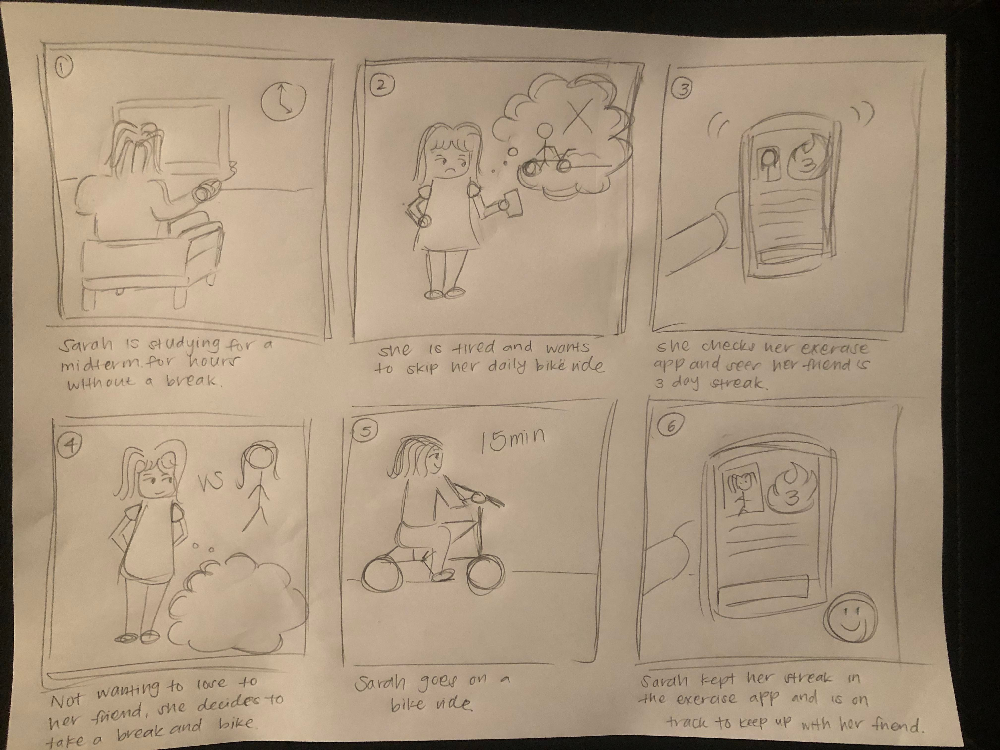

This storyboard describes a person (Sarah) who has been studying for hours for her midterm with no break. She usually bikes everyday but feels tired and wants to skip a day. She checks our app and sees that her friend has a three day exercise streak. Not wanting to lose to her friend, Sarah decides to take a break and bike for 15 minutes. She earns her own three day streak and is happy about her accomplishments.
